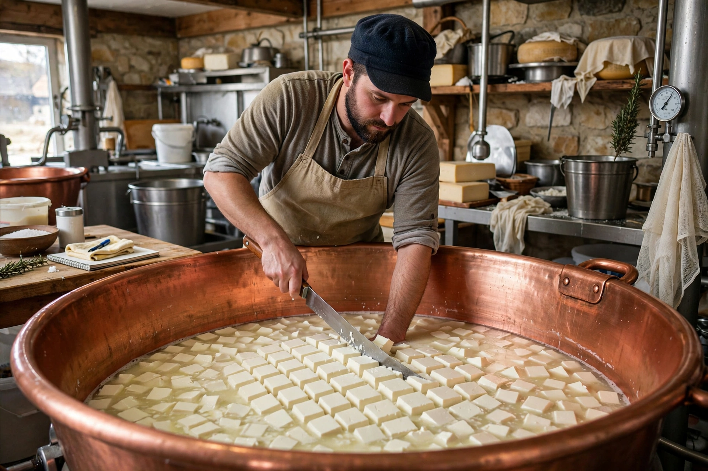

| Main ingredient | Milk (cow, goat, sheep, buffalo) |
|---|---|
| Key steps | Acidification, coagulation, curd cutting, salting, ageing |
Cheesemaking is the craft of producing cheese from the milk of cows, goats, sheep and other animals by coagulating the protein casein and separating curds from whey.
Process
Milk is warmed and starter bacteria convert lactose to lactic acid; rennet (or another coagulant) sets the curd, which is cut to release whey, then salted, shaped, pressed and ripened. Variables of temperature, acidity, moulds and ageing time create hundreds of varieties from fresh mozzarella to aged Parmesan.
History
Cheese production probably began in the Neolithic Middle East over 7,000 years ago as a way to preserve milk, spreading through Greece and Rome and medieval monasteries before industrial factories emerged in the 19th century.
Science and safety
Fermentation, enzymes and ripening cultures determine flavour and texture; pasteurisation and food-safety rules govern modern production and debate over raw-milk cheeses continues.